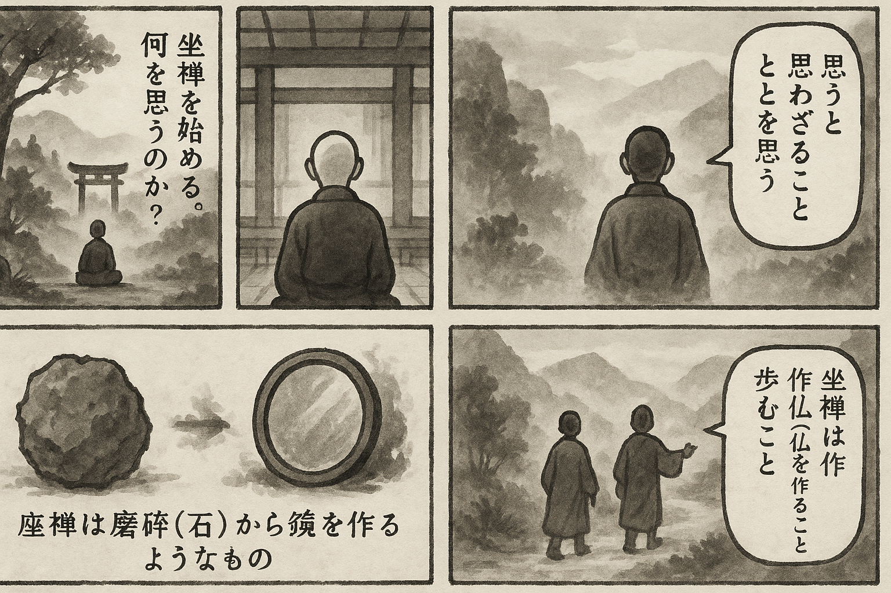

七十五巻 巻一覧
正法眼藏第12 坐禪箴
本紹介ページの導入・語彙・深掘り・クイズは tools/regen_volume_intro_from_corpus.py が OpenAI API で生成したものです（入力は当巻の原文からの短い抜粋のみ）。内容はモデル出力のため、重要箇所は必ず原文・教本と照合してください。
出典: https://shomonji.or.jp/zazen/doc/genzou.html
原文・現代語訳の全文は 全文ページを参照してください。
この巻の紹介（導入）
この巻は、坐禪に関する道元の教えを中心に展開されている。特に、思量と不思量の関係についての問答が重要なテーマとなっている。
坐禪を通じて、佛道に至るための真摯な修行の必要性が強調されており、坐禪の本質を理解することが求められている。
語彙の足場
- 坐禪：心を静め、身体を整え、内面的な洞察を深めるための修行法。道元は坐禪を通じて真の悟りに至ることを説いている。
- 思量：思考や考察を行うこと。道元は思量が不思量とどのように関わるかを問うことで、深い理解を促している。
- 不思量：思考を超えた状態、または思考を行わないこと。道元はこの状態が坐禪の核心であると述べている。
- 功夫：修行や努力のこと。坐禪においては、真剣な修行が求められることを示している。
- 佛道：仏教の教えに基づく道。坐禪を通じて悟りを得ることが目指される。
原文（要点の抜粋）
当巻の冒頭付近からの短い抜粋です。長い引用は載せていません。 全文は全文ページを参照してください。出典はリポジトリ内 doc/正法眼蔵.txt です。原文の参照元: https://shomonji.or.jp/zazen/doc/genzou.html
觀音導利興聖寶林寺
藥山弘道大師、坐次有僧問、兀兀地思量什麼（藥山弘道大師、坐次に、有る僧問ふ、兀兀地什麼をか思量せん）。
師云、思量箇不思量底（箇の不思量底を思量す）。
僧云、不思量底如何思量（不思量底、如何が思量せん）。
師云、非思量。
大師の道かくのごとくなるを證して、兀坐を參學すべし、兀坐正傳すべし。兀坐の佛道につたはれる參究なり。兀兀地の思量ひとりにあらずといへども、藥山の道は其一なり。いはゆる思量箇不思量底なり、思量の皮肉骨髓なるあり、不思量の皮肉骨髓なるあり。
僧のいふ、不思量底如何思量。
まことに不思量底たとひふるくとも、さらにこれ如何思量なり。兀兀地に思量なからんや、兀兀地の向上なにによりてか通ぜざる。賤近の愚にあらずは、兀兀地を問著する力量あるべし、思量あるべし。
大師いはく、非思量。
いはゆる非思量を使用すること玲瓏なりといへども、不思量底を思量するには、かならず非思量をもちゐるなり。非思量にたれあり、たれ我を保任す。兀兀地たとひ我なりとも、思量のみにあらず、兀兀地を學頭するなり。兀兀地たとひ兀兀地なりとも、兀兀地いかでか兀兀地を思量せん。しかあればすなはち、兀兀地は佛量にあらず、法量にあらず、悟量にあらず、會量にあらざるなり。藥山かくのごとく單傳すること、すでに釋迦牟尼佛より直下三十六代なり。藥山より向上をたづぬるに、三十六代に釋迦牟尼佛あり。かくのごとく正傳せる、すでに思量箇不思量底あり。
しかあるに、近年おろかなる杜撰いはく、功夫坐禪、得胸襟無事了、便是平穩地也（功夫坐禪は、胸襟無事なることを得了りぬれば、便ち是れ平穩地なり）。この見解、なほ小乘の學者におよばず、人天乘よりも劣なり。いかでか學佛法の漢とはいはん。見在大宋國に恁麼の功夫人おほし、祖道の荒蕪かなしむべし。
又一類の漢あり、坐禪辨道はこれ初心晩學の要機なり、かならずしも佛祖の行履にあらず。行亦禪、坐亦禪、語默動靜體安然（行もまた禪、坐もまた禪、語默動靜に體安然）なり。ただいまの功夫のみにかかはることなかれ。臨濟の餘流と稱ずるともがら、おほくこの見解なり。佛法の正命つたはれることおろそかなるによりて恁麼道するなり。なにかこれ初心、いづれか初心にあらざる、初心いづれのところにかおく。
図解（4コマ・AI生成）
教義の根拠は原文・出典に従い、漫画は比喩の補助に留めてください。

深掘り（読解の手掛かり）
- 坐禪は単に身体を座らせる行為ではなく、深い内面的な修行を含む。
- 思量と不思量の関係性が、坐禪の理解において重要な鍵となる。
- 道元は、坐禪を通じて得られる悟りの状態を強調している。
確認（形成評価）
各設問の下の「採点」で正誤を表示します（ブラウザ内のみ。ログは送りません）。